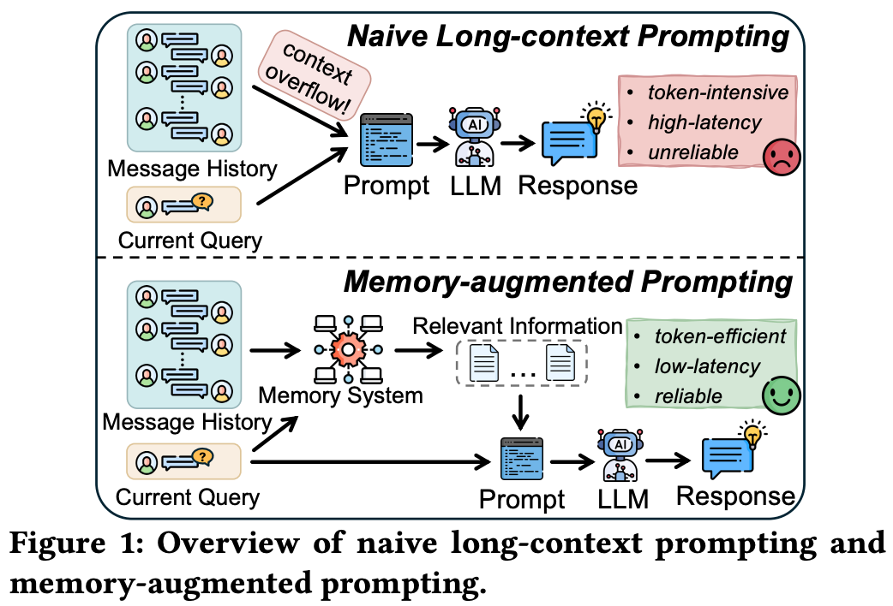

论文: Memory in the LLM Era: Modular Architectures and Strategies in a Unified Framework
导读：这篇综述对现有的记忆框架进行了总结，相比于 Memory in the Age of AI Agents 和 Rethinking Memory Mechanisms of Foundation Agents in the Second Half: A Survey，这篇综述篇幅较为简短，覆盖的主题也相对较少——即重点专注于对记忆框架的整理。我觉得这篇文章对新手更加友好，不会一下子引入过多的概念。对于有一定经验的 Agent Memory 从业者而言，这篇文章也是一份不错的复习资料。
1 引言
智能体能够自主运行、适应多样化环境，并支持针对用户需求的个性化交互。支撑这种智能行为的关键能力之一是记忆机制。如图1所示，通过维护并利用过往交互中的相关信息，记忆机制使智能体能够超越原始的长上下文提示（naive long-context prompting）。为智能体配备记忆机制后，它们能够随时间积累经验、保持上下文知识，并做出更明智的决策——类似于人类依靠记忆从过往经验中学习并指导未来的行动。

近年来，出现越来越多的记忆方法，以增强智能体在跨交互场景中保留、组织和利用历史信息的能力。这些方法旨在使智能体超越无状态推理（stateless reasoning，不依赖持久化记忆，每次推理独立进行），转而支持长期规划、个性化和自适应决策。表1总结了十种具有代表性的智能体记忆方法，按照四个关键维度进行分类：底层存储结构、信息提取机制、记忆管理策略和检索方法。

本文提出一个统一的模块化框架，该框架将记忆机制分解为四个阶段，包括 信息提取（Information Extraction）、记忆管理（Memory Management）、记忆存储（Memory Storage）和信息检索（Information Retrieval）。在此框架下，我们在两个典型的长期对话基准测试 LoCoMo 和 LongMemEval 上进行评估。
2 预备知识
本节介绍现有记忆方法中的一些重要概念和典型工作流，并讨论 RAG 与记忆之间的关系。
2.1 LLM 相关概念
LLM Prompting
提示工程通过构建包含任务指令、当前输入以及可选的示例的输入上下文来指定 LLM 的任务。模型的输出则基于该上下文生成。提示工程在基于 LLM 的系统中尤为重要，因为它提供了一种轻量级、无需训练的接口，模型行为可以通过修改输入上下文而无需更改模型参数来重新定向。这一特性使得任务规范和约束可以直接用自然语言表达，从而支持广泛的实际应用。除了最终响应生成外，提示工程还常用于驱动 LLM-centered pipeline 的中间子任务。典型示例包括提取关键信息、整合中间结果等。
LLM-based Agents
基于 LLM 的智能体利用 LLM 作为核心决策模型。与单轮提示不同，智能体在一个闭环中运行：它接收观察，然后进行推理或规划，执行动作（可能通过工具），从环境中获得反馈，并进入下一步。交互历史和可用状态被组合成上下文，智能体基于该上下文预测下一步动作。基于 LLM 的智能体的动作空间通常包括自然语言响应和结构化工具调用（如信息检索、API 调用和记忆读写操作），从而使得多步骤任务得以完成。因此，基于 LLM 的智能体必须在对话轮次和会话之间保留和复用信息，这催生了对记忆机制的需求。
2.2 智能体记忆
记忆被引入基于 LLM 的智能体中，以弥补有限的上下文窗口。由于模型仅基于有限数量的 Token 进行生成，来自较早轮次且位于当前提示之外的信息很容易丢失，这会降低长程对话和多会话任务的性能。显式记忆模块能够根据用户与智能体的交互历史，持久化重要信息——例如用户偏好、重要事件、中间决策和任务约束——并在必要时重新引入，从而提高一致性并支持依赖长期上下文的推理。
记忆增强系统的典型工作流首先选择性地从正在进行的交互中提取重要信息——例如事实、用户偏好或重要事件——并将其存储为记忆条目。这些条目随后经历一系列管理操作：整合（consolidation），将相似记忆合并以提高连贯性并减少冗余；更新（updating），修改存储内容以保持准确性并反映最新知识；过滤（filtering），移除过时、冗余的记忆，以保障系统的效率和相关性；以及增强（enhancement），标记或突出重要记忆以便于识别和检索。这一结构化过程确保记忆系统保持有序、可扩展，并与用户需求保持一致。当推理或生成需要额外上下文时，记忆系统检索并向 LLM 提供最相关的信息，以保证长程任务的一致性。
记忆与检索增强生成是相关但不同的机制。记忆主要面向有状态的、依赖交互的、随时间演变的信息，用于个性化和跨会话连续性。相比之下，RAG 主要面向外部知识，从文档集合或知识库中检索证据以补充领域知识并减少幻觉。
3 统一框架
本节将现有智能体记忆系统分解为统一的模块化组件，如图2所示。共包含四个关键组件：信息提取、记忆管理、记忆存储和信息检索。

给定当前用户消息 M 和现有记忆 H，智能体系统通过四个关键组件协同运作：
- 信息提取。该组件描述智能体系统如何识别并从当前的用户消息 M 中提取对更新记忆有用的关键信息。它过滤掉冗余细节，并将相关内容转化为适合下游处理的不同类型知识（例如从文本中导出的三元组、信息摘要）。
- 记忆管理。该组件展示智能体系统如何通过整合、更新、过滤和增强等操作，将新提取的信息与现有记忆 H 融合。目标是维护一个连贯、一致且最新的记忆状态，能准确反映积累的知识。
- 记忆存储。该组件规定智能体系统如何组织和持久化处理后的记忆。它可以采用向量存储、图存储或混合存储格式，以满足多样化的信息检索需求。
- 信息检索。当新查询到达时，该组件控制智能体系统如何从记忆库中检索最相关的信息以支持推理。
4 信息提取
该组件用于识别并从当前用户消息中提取对下游记忆处理有用且必要的信息。如图4所示，现有智能体系统采用不同的信息提取方法，可大致分为以下几类：
- 直接归档（Direct Archiving）。这种方法代表了最直观的信息提取形式，智能体系统仅将原始消息和时间戳存档，不做任何处理。
- 基于摘要的提取（Summarization-based Extraction）。这种方法利用 LLM 从一个或多个对话轮次中生成简洁的信息摘要。A-MEM 和 Mem0 等记忆框架从 M 中提取关键词和上下文标签，或使用 LLM 生成原始文本的摘要。图3展示了该方法的代表性 Extraction Prompt。
- 基于图的提取（Graph-based Extraction）。这种方法利用 LLM 从 M 中提取细粒度实体和关系，形成主-谓-宾三元组（subject-predicate-object triples）用于知识图谱构建（例如 Mem0𝑔、Zep）。此外，还记录创建或失效时间等时间元数据，以支持图记忆内的动态更新和时序推理。附录A提供了为基于图的提取设计的提示的具体示例。


5 记忆管理
记忆管理过程控制智能体系统如何随时间维护、精炼和演化其记忆。如图5所示，它模拟人类记忆的生命周期，涵盖五项核心操作：连接相关经验、整合碎片化信息、将短期记忆转化为长期记忆、更新过时内容以及过滤过时知识。通过这一过程，维护一个连贯、高效且自适应的记忆状态，支持持续学习和推理。表2总结了业界常见开源记忆系统的记忆管理方案。

- 连接相关经验。人类自然地跨时间和上下文关联相关事件；智能体系统通过连接机制来模拟这一点。该机制在共享语义相似性、时间邻近性或上下文相关性的记忆条目之间建立显式连接，通过图内的结构边（structural edges）或跨离散记录的关联链接（associative links）来实现。例如，A-MEM 和 MemoryOS 等记忆方法利用基于语义相似性或连续性的关联链接，实现跨连接记忆的同步更新和对齐。另一方面，Zep 和 Mem0𝑔 等基于图的方法侧重于连接单个情景（episode）或实体节点，以支持基于跨概念或时间记忆的推理和检索。
- 整合碎片化记忆。人类倾向于总结日常经验，仅保留关键事件而丢弃细节。智能体系统通过抽象（abstraction，将细节信息概括为高层表示）或摘要实现类似的整合。例如，MemoryBank 将重复的日常记录聚合为事件摘要，并随着经验积累精炼全局用户画像。同样，MemoChat 将相关对话按共享主题分组并生成主题级摘要。这一过程减少冗余、提炼关键信息，并将零散记忆转化为适合长期存储的简洁高层表示。
- 跨记忆层级转化。人类记忆逐渐将重要信息从低级存储转移到高级存储，强化那些被反复回忆的内容。智能体系统采用类似的分层迁移机制。例如，MemoryOS 实现了一个两阶段迁移策略：短期记忆首先按照先进先出（FIFO, First-In First-Out）策略移至中期存储，然后中期记忆通过热度评分（heat-based score）被提升至长期存储，该评分综合考虑访问频率和时效性。此外，Zep 等记忆方法将语义相关的记忆组织成社区（community formation），形成结构化、相互关联的长期表示。这一阶段强化了持久性知识，同时保持效率。
- 更新现有记忆。人类通过整合新经验和纠正不一致来不断修正记忆。智能体系统遵循类似原则，通过三种主要更新范式：（1）基于规则的更新，根据预定义规则更新现有记忆。例如，MemoryBank 采用艾宾浩斯遗忘曲线（Ebbinghaus’s Forgetting Curve）理论随时间调整记忆强度。在 MemoryOS 中，新记忆基于语义和关键词相似性被整合到现有结构中；（2）基于 LLM 的更新，通过大语言模型对条目进行总结、合并或解决冲突。举例来说，MemTree 通过依赖 LLM 执行专门的聚合操作（Aggregate Operation）来更新其记忆；Zep 中的更新过程要求 LLM 通过严格遵循提示中给出的详细语义约束和指南来执行消解任务（resolution tasks）。（3）基于智能体的更新，智能体自主决定应用哪些操作（例如修订、合并、剪枝），如 MemGPT 和 MemOS。更具体地说，智能体被授予访问当前上下文以及历史或归档记忆条目的权限，并学习利用专门的系统工具来高效灵活地管理记忆。这些策略确保记忆保持准确、一致，并与不断演化的知识保持对齐。
- 过滤过时信息。最后，记忆系统必须通过过滤过时或冗余信息来保持紧凑和相关性，这可以通过直接移除记忆、降低其分配的权重分数或应用状态标签（如“invalid”）来实现。这一过滤过程类似于人类遗忘，选择性地淡化未使用或不相关的记忆。（1）基于使用的过滤，如 MemoryOS 和 MemoryBank 中所见，依赖访问频率和基于时间的衰减。创建时间久远且很少被检索的记忆会被优先过滤。（2）基于内容的过滤检查语义相似性，并利用 LLM 检测和过滤重复或过时的知识，如 Mem0 和 Mem0𝑔 中所做的，从而减少噪声并提高检索精度。这些机制共同维持一个高效、轻量的记忆，支持持续的适应和学习。

6 记忆存储
记忆存储组件控制处理后的记忆如何被组织和持久化，主要跨越两个维度：以组织为中心和以表示为中心。前者决定存储系统的架构深度，涵盖扁平存储和分层存储；后者刻画所采用的技术范式，主要包括向量存储和图存储。
- 扁平存储（flat storage）。相对于以组织为中心维度中的分层存储而言，扁平存储代表了一种统一的、单层的存储，将所有信息聚合在一个同质空间内，例如 FIFO 队列或 JSON 文件。
- 分层存储（hierarchical storage）。这种方法将记忆划分为专门的、多层架构，允许各个存储组件履行不同的功能角色并在不同粒度级别上运行。例如，MemoryOS 将记忆组织为三层结构：短期记忆用于及时对话，中期记忆用于主题摘要，长期记忆用于用户偏好。通过对相应存储组件应用不同且协同的管理和检索策略，分层存储有效优化了计算开销与知识持久性之间的权衡。
- 向量存储（vector-based storage）。这种方法将文本记忆编码为高维嵌入，存储到专门的向量库或数据库中，使智能体能够执行高效的语义相似度搜索。
- 图存储（graph-based storage）。这种方法利用多样化的图拓扑结构，如树、知识图谱和时序图，以保留记忆中固有的丰富结构信息。例如，MemTree 将记忆组织为分层树，其中每个节点封装聚合的文本内容，沿树的深度提供不同层次的抽象；Zep 采用分层时序知识图谱，通过将原始消息表示为节点、提取主-谓-宾三元组以及将实体聚类为社区来同时组织记忆。这些基于图的存储方法捕获了简单向量相似度度量无法企及的复杂关系和多跳（multi-hop，需要结合多个信息片段进行多步推断）关联。
7 信息检索
该组件控制智能体系统如何从记忆存储中识别和提取最相关的信息，现有的信息检索策略可以根据其采用的基本机制大致分为四种范式：
- 基于词汇的检索（Lexical-Based Retrieval）。这种范式依赖于表层 Token 或术语的重叠，通常通过一些代表性技术实现，如基于集合的匹配通过杰卡德相似系数（Jaccard similarity coefficient）或评分模型如 BM25。基于词汇的检索为精确术语匹配提供了强有力的基线，在检索名称、特定实体或措辞精确的短语时尤为有效。
- 基于向量的检索（Vector-Based Retrieval）。这种范式利用向量空间中的语义相似度来解决精确关键词匹配中固有的词汇不匹配问题。通过嵌入模型将查询和记忆都编码为高维向量，基于向量的检索被形式化为使用余弦相似度等距离度量进行最相关条目的 Top-k 检索。这种方法擅长捕获潜在的语义细微差别，确保相关性由语义内容而非表层词汇形式决定。为了在庞大的记忆存储规模内保持效率，经常采用近似最近邻搜索算法，如 HNSW 或 PQ（乘积量化，Product Quantization）。
- 基于结构的检索（Structure-Based Retrieval）。这种范式利用记忆实体之间的显式关系连接，通常在基于图或分层的存储上运行，执行图遍历、邻域扩展或多跳推理，以检索相互关联的信息，而非简单的查询到条目匹配。例如，Mem0𝑔 探索从通过相似度搜索识别的节点开始的关系，以构建捕获相关和多方面信息的综合子图。类似地，Zep 利用基于 BFS 的图遍历算法，通过识别额外的节点和边来增强初始搜索结果。
- LLM 辅助检索（LLM-Assisted Retrieval）。这种范式将 LLM 作为主动推理组件来引导或精炼检索过程。除了直接决定应检索哪些具体信息外，LLM 还可以用于将模糊的用户提示转化为精确的搜索查询，或识别查询中的关键实体以促进更有针对性的检索。通过利用 LLM 的推理能力，这种范式擅长揭示潜在的语义依赖关系，从而确保用户查询与检索到的知识之间更紧密的对齐。
8 实验
8.1 设置
评估工作流。我们沿三个维度对智能体记忆机制进行系统实验研究：（1）在10种常见的记忆框架上进行实验；（2）在两个广泛使用的长期记忆基准测试上进行评估；（3）从多个维度评估记忆框架，包括 Token 成本效率、位置敏感性、上下文可扩展性和 LLM 模型依赖性。
基准数据集。我们采用 LoCoMo 和 LongMemEval 两个基准数据集来评估每种记忆机制的性能。这两个数据集均旨在评估长期对话记忆能力，但代表了两种不同的交互场景：LoCoMo 基于两个人类用户之间的对话，而 LongMemEval 基于用户与 AI 的交互。
- LoCoMo。LoCoMo 基准包含十个用于问答评估的长期对话。每个对话平均包含 198.6 个问题，跨越 27.2 个会话，约 588.2 个对话轮次，发生在两位说话者之间。问题分为四种类型：单跳检索（Single-Hop Retrieval）、多跳检索（Multi-Hop Retrieval）、时序推理（Temporal Reasoning）和开放域知识（Open-Domain Knowledge）。
- LongMemEval。LongMemEval 基准包含 500 个高质量问题，旨在评估四项核心长期记忆能力：信息提取、多会话推理（Multi-Session Reasoning）、知识更新（Knowledge Updates）和时序推理。每个问题都基于一个专门的对话历史，该数据集聚焦于用户与 AI 的交互，平均包含 50.2 个会话，长度约为 115,000 个 token。
评估指标。遵循两个基准及现有长程对话记忆研究的评估协议，我们采用两个互补指标。F1 分数通过平衡精确率（Precision）和召回率（Recall）来衡量 token 级别的重叠。BLEU-1 通过带简短惩罚的 unigram 级别修正精确率来捕捉词汇保真度（Lexical Fidelity）。这两个指标均按能力类别在两类数据集上报告，与代表性智能体记忆研究的标准惯例一致。
8.2 评估
实验1. 整体性能。所有智能体记忆方法在两个基准（LongMemEval 和 LoCoMo）、两种模型规模（Qwen2.5-7B-Instruct 和 Qwen2.5-72B-Instruct）下的性能。LongMemEval 和 LoCoMo 的结果分别如表3和表4所示。基于这些结果，我们得出以下观察：
- 基于树的记忆方法（如 MemTree 和 MemOS）通过以多层、多粒度的方式组织记忆来实现优秀的性能。具体而言，MemTree 在 7B 规模的 LongMemEval 上取得了最高的 F1 分数 36.92，而 MemOS 在 7B 和 72B 规模的 LoCoMo 上分别取得了最高的 F1 分数 37.05 和 42.79。树结构在上层提供高层概念摘要，同时在叶节点保留细粒度细节。通过精心设计的分层架构也能实现类似优势，从而促进不同抽象级别间高效的信息流动与转换，MemoryOS 和 Zep 极具竞争力的结果也证明了这一点。
- 保持信息完整性对于有效的记忆持久化至关重要——特别是在信息提取阶段保留原始消息，并在最终响应生成阶段整合原始对话。例如，仅提取基于图的三元组的方法相比保留原始对话片段的方法可能遭受信息损失，这或许可以解释为何 Mem0 在许多情况下优于 Mem0𝑔。
- 有效的记忆组织需要建立相关信息片段之间显式或隐式连接的机制，从而增强存储记忆的连贯性。这对于多跳推理任务尤为重要。缺乏此类关联操作的方法，如 MemoryBank、MemGPT 和 MemoChat，在 LongMemEval 的多会话任务和 LoCoMo 的多跳任务上表现不佳。相比之下，尽管 Mem0 没有显式的“连接”操作符，但其在摄取阶段并发更新相似记忆的策略实现了类似的整合效果。值得注意的是，在 LongMemEval 的多会话任务上，Mem0 相比 MemoryBank 实现了 18.60% 的 F1 分数提升和 26.19% 的 BLEU-1 提升。
- 由于时序推理的复杂性和固有难度，这些任务仍然对模型的推理能力高度敏感。例如，随着 LLM 从 7B 扩展到 72B，MemoryOS 和 MemoChat 在 LoCoMo 上表现出超过 2 倍的性能跃升。为减轻这种对 LLM 推理的严重依赖并提升系统鲁棒性，设计专门的时序信息处理架构组件至关重要，而非仅依赖模型在响应生成时的上下文内推理。


实验2. Token 成本分析。在本实验中，我们从两个角度评估各方法的计算开销：(1) 分析性能与成本之间的整体权衡。图6展示了每段对话的平均 token 成本（Y轴）与整体 F1 分数（X轴）之间的关系；(2) 检验各方法在记忆摄取阶段的可扩展性。图7展示了随着摄取记忆量增加，平均 token 消耗的变化趋势。基于这些结果，我们得出以下观察：
- 总体而言，更高的性能与增加的 token 消耗相关，反映了大量利用 LLM 的对于性能提升的优势。虽然 MemTree 和 MemOS 实现了较高的性能，但它们产生了大量的 token 开销（注：以 MemOS 为例，仅记忆检索流程，其内部使用了 deep search/agentic search，涉及多次调用 LLM。检索的准确性上去了，但 token 消耗也随之大幅增加）。相比之下，MemoryOS 保持了具有竞争力的平衡，以显著更低的 token 成本实现了强劲性能。更简单的方法如 MemoChat 和 MemoryBank 将 token 使用降至最低，但未能提供足够的准确性。值得注意的是，尽管 MemGPT 和 MemOS 都受到操作系统启发并采用**基于智能体的更新（注：即 agentic search）**来自主决定应用哪些操作，但 MemOS 将更多 token 分配给复杂的决策制定，从而相比 MemGPT 获得了更优的性能。
- 信息处理的粒度显著影响 token 成本。在信息提取阶段，这种粒度取决于信息是从单个对话轮次还是多个轮次中集体提取（对应图7）。例如，MemoryOS 将对话组织成段进行中期存储，而 MemoryBank 以天为粒度将历史消息编译成摘要。由于现代 LLM 强大的推理能力，这种粒度的粗化不一定损害性能，甚至可能提升性能，为增强记忆效率提供了一条可行路径。
- 随着记忆量增长，某些方法在平均 token 成本方面表现出较差的可扩展性（对应图7）。对于 MemTree，随着累积对话历史增加树深度，处理每轮对话的成本逐步上升，因为每次自上而下插入新对话节点都需要更新路径上的所有节点。类似地，Zep 的图复杂度随对话轮次增加而增长，导致去重和一致性维护的成本上升。


实验3. 上下文可扩展性分析。在本实验中，我们通过将 LongMemEval 的上下文长度从 50% 扩展到 200% 来研究各种记忆架构的上下文可扩展性。在长程交互中，记忆系统面临的主要挑战从简单检索转变为如何随着信息密度增长而进行有效的抑制噪声。我们在不同上下文规模下评估各种架构，以观察它们在上下文增长时如何维持检索精度。图8a展示了上下文可扩展性的整体趋势。
- 随着上下文规模从 50% 扩展到 200%，几乎所有记忆架构的 F1 分数都呈现稳定下降。这种性能损耗主要由无关信息密度的增加所导致，它降低了检索过程中的信噪比。
- 扩展结果揭示了一种由于操作复杂度所导致的性能分化。MemOS 和 MemGPT 等方法实现了“LLM-as-OS”范式，要求 LLM 通过复杂工具调用自主管理记忆。随着规模增加到 200%，扩展的候选空间显著提高了 LLM 准确推理和执行这些管理指令的难度，导致更高的工具调用失败率和索引冲突率。相比之下，MemoryOS 通过采用显式的基于规则的分层管理来减轻智能体的认知负荷。通过将组织逻辑从 LLM 卸载到确定性框架，MemoryOS 保持了高稳定性，这表明通过精心设计简化智能体的内部管理开销对于稳健的扩展至关重要。
- 不同任务类别对扩展压力表现出不同的敏感性。如图9所示，知识更新尤为敏感，表现出急剧的性能损耗，因为记忆量的增加提高了冲突记录的密度。由于知识更新任务要求模型在互斥版本中识别最新事实，更多过时候选者的存在直接增加了检索干扰。相反，时序任务保持相对稳定，因为它们依赖事件的相对顺序，即使背景量增长，这种顺序在结构上仍然保持清晰。与知识更新中的版本冲突不同，事件的时序先后关系不易因添加上下文而受损。


实验4. 位置敏感性分析。在本实验中，我们通过将关键证据放置在上下文的早期（前 1/3）、中期（中 1/3）或晚期（后 1/3）部分，来评估证据位置对记忆的影响。随着证据在上下文中出现得更早，记忆系统必须弥合更大的时间间隙并处理来自后续对话的更多干扰。本实验测试了记忆框架是否对历史记录保持均匀访问，或表现出对近期输入的偏差。如图8b所示，早期、中期和晚期放置的性能差异显著。关键发现总结如下：
- 随着证据与查询之间的时间间隔增加，观察到明显的近因偏差（Recency Bias）。如图8b所示，大多数方法在证据放置于晚期会话时比早期会话取得更高的 F1 分数。即，MemTree 的整体 F1 分数从 34.13 提升至 37.37，MemOS 从 29.10 提升至 34.40，等等。在相关证据出现后，随着累积的干扰对话增多，维持长程信息一致性和检索变得愈发困难。
- 记忆更新策略显著影响位置敏感性。对于 A-MEM 等方法，动态记忆修订可能覆盖早期证据，使早期会话信息易受后续交互影响。MemTree 和 MemOS 等分层方法表现出不同的机制：虽然原始对话保留在叶节点，但对高层摘要的更新放大了近期信息的影响，增加了晚期-早期差距（Late–Early Gap）。相比之下，MemoryOS 通过跨记忆层级的分阶段转移更均匀地保留历史信息。早期证据在每个层级内保持相对独立，而非与后期信息反复合并。因此，后续交互不会直接重塑早期证据的表示，这解释了 MemoryOS 较小的晚期-早期差距（+1.29 F1）。
- 位置敏感性高度依赖于类别。我们在表5中考察了三种代表性方法在信息提取子任务上的表现。瞬时的、会话信息比持久性特征表现出更强的位置敏感性。用户和助手提取任务显示出显著的早期到晚期变化：Mem0𝑔/MemTree/MemOS 在用户提取上分别为 +9.53/+10.74/+9.23 F1，MemTree/MemOS 在助手提取上分别为 +8.92/+8.30 F1。相比之下，偏好提取保持稳定：改进分别仅为 +1.08、+0.41 和 +0.66 F1。这表明位置敏感性与信息持久性相关：瞬时会话本地细节受后期干扰影响更大，而持久性偏好特征受证据位置变化的影响较小。

实验5. LLM 模型对比。在本实验中，我们在不同 LLM 模型上进行评估。结果如表6所示。总体而言，大多数方法在使用闭源 GPT-4o-mini 模型时取得最佳性能。在开源模型中，Qwen2.5-7B 通常在各类方法上优于 LLaMA3.1-8B，但 MemoryOS 例外，其中 LLaMA3.1-8B 产生了更好的结果。将 Qwen2.5 从 7B 扩展到 72B 为所有记忆方法带来了显著提升，如实验1所讨论，表明现有记忆架构仍然高度依赖模型的推理能力。

9 总结
我们基于观察结果总结了面向实践者的经验（L），并提出了实用的研究机遇（O）。
经验：
- L1. 与扁平记忆结构相比，分层组织在捕捉信息间的结构关系方面更为有效，这可以通过采用基于树的索引或设计多级存储来实现。
- L2. 信息完整性是记忆机制的基础。虽然图的三元组等结构化表示能改善组织性，但保留原始对话上下文对于防止信息提取或检索阶段的语义损失至关重要。
- L3. 通过在信息提取或记忆管理阶段将多个对话轮次作为一个单元处理来优化记忆粒度，可显著减少 token 消耗，而适当的分区进一步保持了检索信息的连贯性。
机遇：
- O1. 在现实场景中，记忆涉及复杂多样的信息源，包括文本对话、历史交互轨迹以及音频、图像和视频等多模态信号。现有记忆机制通常专注于单一或有限的形式，这限制了有效信息的利用。一个有前景的未来研究方向是开发统一的记忆框架，能够无缝整合和关联来自异构模态的信息。
- O2. 现有的记忆方法通常会导致存储规模快速增长、管理与检索开销持续增加。如何在压缩记忆的同时不丢失有用信息仍然是一个重大挑战，这为探索显式文本之外的潜在表示以及学习压缩机制以实现高密度且可用的记忆创造了机会。
- O3. 现有的分层记忆机制主要侧重于将短期记忆整合到长期存储中，但不支持反向转换。一个有前景的方向是设计双向记忆转换机制，以实现跨记忆层次的高效整合与重构。